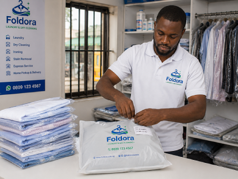
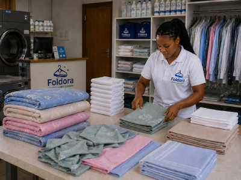
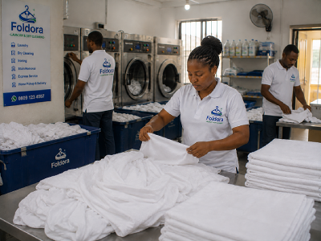
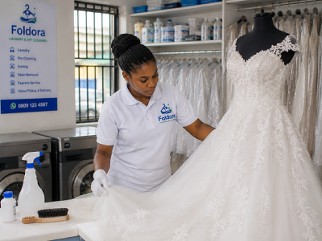

Laundry Services in Abuja
Professional Laundry & Dry Cleaning Services in Abuja
From everyday laundry to delicate garment care and commercial cleaning, Foldora helps individuals, Airbnb hosts, and businesses enjoy convenient laundry pickup and professionally cleaned clothes across Abuja.

Dry Cleaning
Keep your suits, dresses, jackets, and delicate garments fresh, spotless, and professionally cleaned using fabric-appropriate cleaning methods that help preserve their appearance and extend their lifespan.

Wash & Fold Laundry
Save hours every week with neatly washed, dried, and folded everyday laundry. Ideal for busy professionals, families, and students who want fresh clothes without the hassle.

Ironing Services
Enjoy professionally pressed, wrinkle-free clothes that are ready for work, business meetings, school, and special occasions without spending hours ironing at home.

Pickup & Delivery
Book a convenient pickup from your home, office, or business anywhere across Abuja and have your freshly cleaned laundry delivered back to your doorstep.

Express Laundry Service
Need clean clothes urgently? Our express laundry service provides faster turnaround for everyday garments, helping you get freshly cleaned clothes back when time matters most.

Bedding & Linen Cleaning
Keep your bedsheets, duvets, towels, pillowcases, and linens fresh, hygienic, and professionally cleaned to create a cleaner, more comfortable home or guest space.

Commercial Laundry
Reliable laundry solutions for hotels, Airbnb hosts, restaurants, gyms, spas, and businesses that require consistent, high-quality garment and linen care.

Wedding Dress Cleaning
Preserve your wedding gown with careful stain treatment and fabric-safe cleaning designed to protect delicate materials and help keep your dress looking its best.
Who we serve
Laundry Solutions for Homes and Businesses Across Abuja
Whether you're managing a busy household or running a business, Foldora provides convenient laundry pickup and professional garment care designed to save you time.
How it works
Simple Laundry Pickup & Delivery Across Abuja
Booking your laundry pickup with Foldora is quick, convenient, and designed to save you time every week.
Schedule a Pickup
Choose your preferred pickup date and time through our booking form or WhatsApp.
We Collect Your Laundry
Our team arrives at your location in Abuja to pick up your clothes, bedding, or garments.
Professional Cleaning & Care
Your items are professionally cleaned, carefully handled, and prepared for delivery.
Fresh Laundry Delivered
Receive your freshly cleaned and neatly packaged laundry at your doorstep.
Frequently Asked Questions
Common Questions About Our Laundry Services
Do you offer laundry pickup across Abuja? +
Yes. Foldora provides convenient laundry pickup and delivery across Abuja, making it easy to schedule collection from your home, office, or business.
How long does laundry take? +
Most standard laundry orders are completed within approximately 72 hours. Express laundry services are also available for urgent requests.
What items can be dry cleaned? +
We clean suits, dresses, jackets, uniforms, delicate garments, wedding dresses, and many other fabric types using appropriate cleaning methods.
Do you offer commercial laundry? +
Yes. We work with hotels, Airbnb hosts, restaurants, gyms, spas, offices, and other businesses that require regular laundry services.
How do I schedule a pickup? +
Simply visit our booking page or contact us on WhatsApp to choose a convenient pickup date and time.
Ready to Save Time on Laundry?
Schedule a convenient pickup today and let Foldora professionally wash, dry clean, iron, and deliver your clothes, so you can focus on more important things.